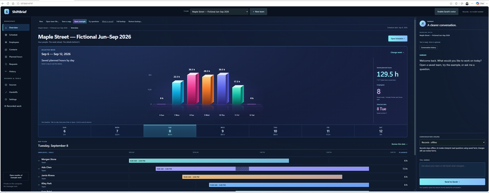

Person-specific continuity
Identity and reviewed records help a conversation continue across bounded restarts.
Projects / experiments / tools
Kira World is the flagship. ShiftBrief is a free Windows tool for everyday team records and staffing plans. Video Studio and Sarah Travel remain separate projects in development.
Project 01 / Flagship
A local-first experimental platform for distinct synthetic people with continuity, natural voice, reviewed memory, and a future home in persistent shared worlds.
Identity and reviewed records help a conversation continue across bounded restarts.
Local conversation and speech experiments form the most tangible working layer today.
3D home, body, garment, and object behavior are being defined and tested before execution.
Future effects are designed around explicit authority, evidence, and fail-closed gates.
Current boundary: Kira World is not yet a finished 3D world, autonomous embodied person, or public product. Recent body and clothing work is mostly requirements, provenance, non-person fixtures, schemas, and independent audits—not a running production simulation.


Project 02 / Travel application
A travel-planning experiment that pairs a more human guide with practical route planning, protected online lookups, and an offline fallback.
Organizes destinations and travel details in a companion-centered interface.
Uses a protected online route path with an offline fallback when connectivity is unavailable.
Private hackathon and debugging records cover both Android and Windows builds.
Security-token rotation, physical-device verification, and release-level testing still remain.
Current boundary: Sarah Travel is a private experimental build. It is not on Google Play, not offered as a public service, and its screenshots represent development work rather than a finished release.


Project 03 / Creator tool
A local workspace for developing video ideas through chat, reviewing media, and assembling selected clip ranges. The preserved v1.9 chapter workflow remains part of the project's working history.
Develop written project material and hand it into saved review steps. The conversation-led production workflow is still being connected and tested.
Select source start points and durations, edit existing sequence rows, save and reopen them, and export the selected ranges. Video and audio checks verify that the requested excerpts are used.
Local speech work uses Robert's saved, approved voice reference with scripted sections and technical audio checks. The completed ShiftBrief demonstration combined this narration with Codex-assisted editing and local video assembly.
The earlier v1.9 chapter pipeline and 14-chapter output remain preserved. New work builds on that history without replacing the originals.
Current boundary: This is an actively developed private tool. Recent range and audio tests establish editing behavior, while consistent photoreal scene generation and the complete chat-to-finished-video workflow remain unfinished. Engineering test clips are not a claim of improved cinematic quality.


Project 04 / Team workspace
Keep employee records, availability, completed work and staffing plans together. Ask practical questions, inspect the saved evidence, and review changes before applying them.
Review employee information, compare recorded work, and answer supported team questions from saved records. Planned shifts and completed work stay separate.
Work with availability, coverage gaps, lunch choices and replacement options. Staffing changes are proposed for your review before they are applied.
Create a business, load a saved business, or restore a backup. The optional Maple Street demo uses invented people and records. Business copies and complete workspace backups help you move between computers.
The normal Records mode works without a model, account or API key. Optional local AI uses Strands with your separately installed Ollama and a suitable model. Model weights are not included.
Install: Download and run the installer, then open ShiftBrief from the Start menu. A Desktop shortcut is optional. Python is included. Your browser opens the local app; a fresh installation starts blank.
Close or uninstall: Use Start → ShiftBrief → Close ShiftBrief before upgrading or uninstalling. Windows Settings → Apps removes the program; your business records remain in %LOCALAPPDATA%\ShiftBrief\data.
Current boundary: This is an early independent release. Review recommendations and keep backups. ShiftBrief is not payroll software or a source of legal advice. The installer is unsigned, so Windows may display its normal publisher warning. Source code and dependency notices are included; no saved owner workspace, voice pack or model weights are distributed.

Other prototypes / September 12, 2026
These smaller browser projects explored work, home, research and creative planning. CutBrief's earlier hackathon submission is preserved below. ClearTrail, Carry On and Kira Sequence Desk remain in private owner review; they are not part of the ShiftBrief download.
Retired prototype · historical submission. The earlier experiment organized video plans, references and supplied clips for trimmed, captioned exports. It is preserved as project history; no new generation is offered.
View the historical submitted workspace ↗Keep document revisions, compare exact changes, and prepare briefings beside quoted evidence. Review possible disagreements without treating the newest source as approved.
Organize work, home or travel plans with tasks, dependencies and readiness. Review changes, preserve history, and save an export or a restorable workspace copy.
Turn supplied notes into a timed, source-linked sequence, associate your media and review coverage. Export an editable package with the selected original files.
Current boundary: The browser prototypes use bounded written planners and source retrieval, with no preinstalled model or API key required. CutBrief is retired; no new generation is offered and its historical paid-generation gate remains locked. Kira Sequence Desk exports an editable plan and supplied media; it does not render a movie. These prototypes do not establish finished personal Video Studio quality or connected Alexa services. CutBrief’s historical submission does not imply a contest result. Browser work is stored on the current device; save a backup before clearing site data.